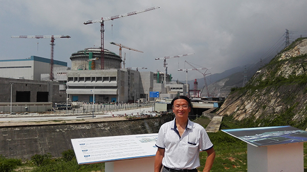
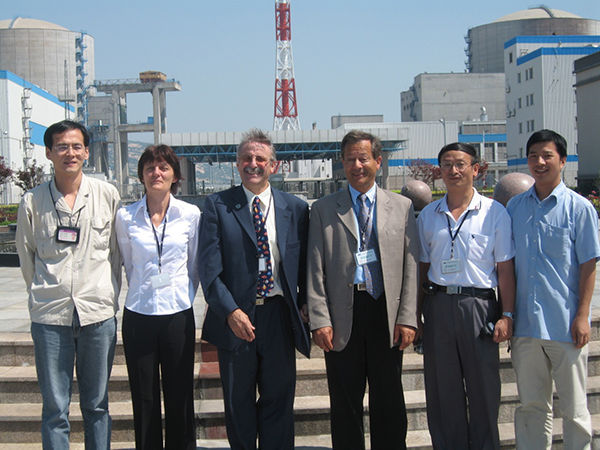
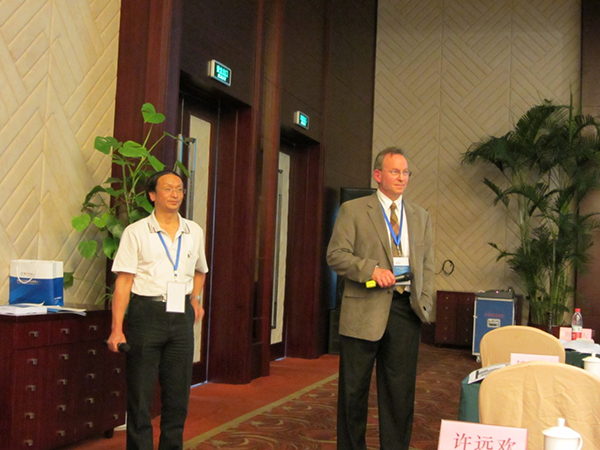
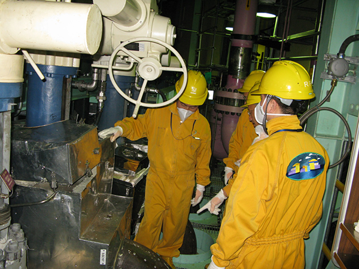

自从1954年苏联建成了世界第一座核电站以来，人类和平利用核能已经长达61年了。在这半个多世纪的时间里，核电技术经历了3次飞跃，共形成了4代技术，每一代核电站在经济性、安全性和高效性方面都取得了更大的突破。为了应对核扩散和恐怖势力，解决核燃料可持续性发展的问题，在第三代技术落地之前，第四代新型核能系统也提上日程。第四代核能系统是一种具有更好的安全性、经济竞争力，核废物量少，可有效防止核扩散的先进核能系统，代表了先进核能系统的发展趋势和技术前沿。随着世界核电技术在飞速地发展，核电安全问题也愈加受到各国的重视，提及2011年日本福岛核电站核泄漏事故大家仍心有余悸。因此核电发展必须建立在安全的基础上，而核电的安全与否又取决于核电设备的高度可靠性。核电设备一旦失效，轻则影响正常运行，重则导致重大事故，故而核电设备失效行为的研究显得尤为重要。由于核电站的特殊环境（高温、高压、强辐射，以及引发腐蚀的介质环境），材料腐蚀是引发核电设备失效的重要原因之一。在我国核电发展进入规模化批量化的新形势下，加强对核电材料的腐蚀与防护研究尤为重要。为了全面科普核电腐蚀与防护知识，为行业人士提供建议，让其预防并把问题解决在萌芽状态确保核电安全运行，记者特邀请到上海材料研究所教授级高级工程师，上海市工程材料应用评价重点实验室腐蚀实验室主任李光福教授做相关方面的精彩解读。

上海材料研究所教授级高级工程师，上海市工程材料应用评价重点实验室腐蚀实验室主任李光福教授
顺应形势 发展核电关键材料
目前全世界正在研发多种核能技术，包括第四代核能和被称为‘人造太阳’聚变能，人们希望核能能满足世界能源的需求。可看到全世界核工业正在有力地发展，那么材料在核工业中发挥着怎样举足轻重的作用呢？
李教授表示，尽管有日本福岛以及前苏联切尔诺贝利和美国三里岛几次重大核事故和大量质疑，但全世界核工业正在有力地发展，比如我国正在批量化建设核电站、英国欣克利角项目合同正式签订、以及全世界正在研发多种核能技术，包括第四代核能和被称为‘人造太阳’聚变能，说明核电站的开发利用在当今人类社会发展中有坚实的基础。
20世纪人类最伟大的创举之一就是征服和有效利用核能，包括核能发电。电力消费水平是当今一个国家或者地区发展程度的重要标志，核能发电已经成为发达国家电力供应的主要形式之一，是经济合作与发展组织（OECD）国家最大的低碳电力来源，超过OECD国家电力生产份额的21%，占美国低碳电力的比例高达63%。国际原子能机构（IAEA）预计，2030年全球核电装机容量将达435~722 GWe。国际能源署（IEA）预测，2035年全球核电装机容量将达到578 GWe，核发电量将增加至4300 TWh，核发电量在全球总发电量中的份额约占12%。鉴于核电已成为可大规模开发利用的能源，是能有效解决能源需求增长与过度依赖化石燃料消费带来温室效应和污染问题的少数答案之一，我国大约十年前将政策从“适度发展核电”改变为“积极发展核电”， 截至目前，我国在役、在建核电机组总数达到55台，总装机容量5600多万千瓦，在役核电机组已经超过韩国、俄罗斯，仅次于美国、法国、日本，列全球第四。
世界和我国的主流堆型是压水堆核电站，一座这样的核电站有数百个系统、几万台（套）设备，按结构位置可分为核岛设备、常规岛设备与BOP（核电站配套子项）设备三大类，按照设备服役工况或使用功能的不同，可分为核一级、核二级、核三级和非核级。核电设备的质量与可靠性，决定了核电的安全性和经济性。制造有核级要求的设备（部件），其所用材料称为核电关键材料。
核电站是高安全可靠性要求、高投资、高回报，材料在核电站中有极其重要的作用，在不同位置材料的服役环境不同。作为核电站核心的核岛主设备包括反应堆压力容器、蒸汽发生器、稳压器、控制棒驱动机构、堆内构件、主管道、主泵等，是防止反应堆放射性外泄的第一道屏障，可靠性要求最高。由于长期在高温、高压和强辐射场条件下工作，对核电关键材料的要求也最严格，大量采用锆合金、奥氏体不锈钢、镍基合金和低合金钢等材料。常规岛设备和BOP设备材料主要为碳钢和低合金钢等，通常与放射性外泄关系不大，但由于核电的高度政治敏感性，一旦发生事故，即使与核安全无关，也会在社会上产生巨大反响。可以说材料在核工业中发挥着关键的作用。
确保安全 将核电防腐进行到底
作为项目主要负责人员，在核电材料腐蚀破裂问题方面，完成了多项国家和地方项目并作出重要贡献，谈及这些项目，李教授表示自80年代中期以来，他们上海材料研究所以杨武老师为首的团队开展了这方面的研究和应用，获得国家和地方不少奖，他2002年回国继承了这方面的工作，得到了杨老师很多帮助。这十多年来他们在国家科技部社会公益基金、973和能源局核电重大专项基金项目，以及上海市科委项目和产业界应用项目支持下，尽力在核电材料腐蚀破裂的研究和应用方面做工作，材料涉及镍基焊缝和不锈钢焊缝的异材焊接件、奥氏体不锈钢和反应堆压力容器用低合金钢，有知识创新和工程问题解决，包括协助核安全局评审以解决若干重大不符合项工程问题。算上前面在国外的经历，他在这个领域已有二十多年的耕耘，有不少感触。

2006年与IAEA专家组在田湾核电站，协助解决蒸汽发生器传热管问题

在国内召开的核电站设备可靠性等国际研讨会上，为Peter Andresen等著名专家做大会翻译

2013年为秦山核电站泄露管线失效分析与模拟验证项目做现场调查
核安全至关重要。核电设备若发生重要失效，不仅影响核电站的正常运行，还可能导致重大核事故的发生。核电发达国家经验表明，材料腐蚀引发的核电设备失效行为占有很大的比重，损失或说耗费巨大，在核岛、常规岛和BOP不同结构位置服役条件不同，腐蚀的类型各有特色。瑞典核电监察机构的数据库STRYK对核电站材料各种失效事件的统计数据表明，腐蚀在1千多个失效事件中占绝对多数，首位是应力腐蚀破裂， 其次是磨蚀，第三位为热疲劳，第四位为振动疲劳。其余的是其它腐蚀、制造和安装错误、力学失效等。
美国在国会支持下于1999年开始对1998年度美国由于腐蚀导致的损失进行调查，于2002年发表了世界著名的调查报告，表明美国1998年腐蚀的直接耗费是1379亿美元，电力系统为69亿美元，其中核电42亿美元；火电19亿美元；水电及其它1.5亿美元；输电及分配6亿美元。
我国由于运行核电站的历史相对较短，关于其失效事件统计平台的国家级核电失效数据库还处于建设的起步阶段，尽管缺乏公开的统计数据，但已有许多腐蚀失效案例分析论文公开发表。预计随着核电站建设数量的增多和运行年数的增加，腐蚀问题会不断上升。
应力腐蚀 现代高端工程中常见的失效问题
李教授曾经在哈尔滨工业大学上研究生和工作期间，针对航天部火箭发动机壳体、紧固件和弹簧在自然环境以及氢作用下的延迟破裂问题，研究高强度钢环境破裂失效控制性因素并做出过贡献。他回忆说，1982年他考上哈尔滨工业大学硕士研究生，师从早年留苏学者吴忍畊教授和雷廷权教授，研究航天部产品用高强度钢应力腐蚀破裂和氢脆问题。当时这个问题在工程上产生了许多隐患和失效甚至灾难性后果。通常是产品通过各种检测后，在长期的服役或存放过程中，没有明显生锈但是慢慢长出裂纹，比如多种型号的火箭导弹发动机壳体出现所谓存放裂纹，高强度螺栓和弹簧电镀不电镀都有不同程度的延迟破裂现象。令他印象深刻的一次工程实践是参与火箭发动机壳体模拟件打压验证试验，监测到了第一次打压（代表过关检测）顺利通过但实际上小裂纹发生亚临界扩展，导致第二次打压（模拟正式使用时）发生低压爆破，体验了应力腐蚀氢脆在有关工程失效现象中起着关键作用。伴随浓厚兴趣的是研究的高难度，由于应力腐蚀发生在极其微小区域、氢扩散快又很难监测到，众多因素都会影响表观现象，工程问题复杂而实验室探索的结果常常出乎意料，大量文献里常见的是扑朔迷离的现象报道和不太周全的推理想象。
他们的努力最终在关键材料因素的学术探索上和工程问题解决上都有收获。这些高强度钢发生应力腐蚀和氢脆的一个特征是裂纹很敏感地在低应力下沿原奥氏体晶界萌生和扩展，当时国际上大量的透射电镜分析都未能在这些晶界上找到任何奇异相，有学者归因于晶界上有硫磷偏聚，有的认为是高强度导致。他们也做了大量的探索，最终是用超高真空里打断试样的俄歇探针和x线光电子谱分析，发现这些淬火及低温回火状态的高强钢沿原奥氏体晶界有一微层碳化物（基于晶体衍射原理的透射电镜分析包括高分辨技术也很难发现它），再根据碳化物与基体界面是氢的强陷阱的数据，提出了控制高强钢应力腐蚀和氢脆敏感性的碳化物与基体界面分布观点，对化学成分和热处理等因素的影响表现做出了新的解释。这些研究结果在国内外重要刊物上发表，到现在对他们做许多工程失效分析时还有重要作用。
核电腐蚀防护任重道远 师夷长技以自强
李教授曾经作为主要人员承担并完成了来自日本、美国、英国核电工业的若干研究项目，并取得不少成果。当问及这方面的经历和国内外核电防护的差别及需要改进的方面时，他回顾说，1994年到英国纽卡斯尔大学留学，获英国健康安全委员会（HSE）的核装置监察机构与英国核电公司联合资助，在Congleton博士领导的实验室研究压水堆非均质焊接件在压水堆各种高温高压水环境中的破裂、高温水电化学行为及使用安全性；1998年到日本东北大学工学部T.Shoji教授领导的断裂和可靠性研究所，主要研究核电环境中压力边界材料及堆内构件的环境破裂特性、辐照和水化学影响、裂尖微区的溶液和显微组织分析、定量预测模型等，并作为主要人员参与研究的立题、国际性研究项目的投标和项目完成的组织工作。2002年回国后，一直在该领域耕耘，对国内外情况有一定了解。
核电在经济上占重要地位的国家，如美国、日本、法国、瑞典、德国、英国、芬兰等，已充分认识到腐蚀失效是水堆核电站长期的、经常的、慢性的、损失巨大的工程问题，对电站的经济运行甚至核安全是重要挑战，而且随着越来越多的核电站进入设计寿命的中后期甚至延寿期，腐蚀问题与老化问题相交织使得这一挑战更加复杂，对此投入大量的人力物力研究其产生原因、过程、预测、防治和相关延寿方法，并普遍认为单靠某个组织甚至某个国家是难以做好的，因而组成了若干定期举行研讨会的会员制合作研究组织，如国际水堆材料环境促进破裂合作组织（International Cooperative Group on Environmentally Assisted Cracking of Light Water Reactor Materials，简称ICG-EAC）等，甚至为一些共性的关键问题合作建立更进一步的会员制组织，提出重要研究课题进行国际招标，比如美国电力研究院（EPRI）牵头建立的研究堆内构件辐照促进应力腐蚀破裂（IASCC）的CIR小组。部分研究结果公开发表在学术期刊和会议录里，但有大量结果以内部报告方式在相关机构存档或在某些封闭性合作研究组织如ICG-EAC的会议里交流。
这方面已取得的大量科研成果不仅为核电发展成人类关键能源产业之一做出重要贡献，也丰富和发展了腐蚀与防护科学，比如成功开发出了高温高压水环境中电化学测控技术和裂纹尖端采样分析的实验技术、长期监测腐蚀裂纹微小扩展的精密技术，发展了关于各种腐蚀失效的理论，特别是关于裂纹扩展及其影响因素和寿命预测的定性和定量模型和公式。长期细致的实验研究对SCC存在临界应力、有害离子临界浓度等传统观点提出了挑战。
随着越来越多的核电站进入设计寿命的中后期甚至延寿期，腐蚀与老化相交织使得问题更加复杂。鉴于腐蚀失效等问题任重道远，发达国家核电站多次突然出现压力边界等与核安全高度相关部位的腐蚀失效，导致多方面的严重损失，近年来以美日法瑞等国家为首的国际核能界倡导和积极推进材料退化主动评估计划和国际合作研究组织及计划，认为自从核电站开始运行，反应堆构件几乎就开始经历材料在水介质、高温、辐照等服役环境条件下的退化，尽管管理机构和工业界已经对发生的问题采取行动以保持安全可靠性，但开发的解决措施有时会带来新问题，更重要的是这些行动多为被动式反应，大大增加了财务和人力负担，影响了管理的有效性和效率，侵蚀了公众信心，有必要采取主动。
与发达国家相比，我国核电建设起步较晚，工程经验和科学研究与核电发达国家相比有不少差距，特别是在2005年前“适度发展核电”的期间，核电腐蚀破裂研究方面有一段低谷，我所是咬牙坚持挺过了这段低谷时期。2005年以来，我国积极发展核电，相应的工程经验快速积累。腐蚀破裂方面的科学研究也有了明显的发展，在国家973计划、核电重大专项等项目的大力支持下，由中国科学院沈阳金属所等单位牵头，联合包括我们所在内的近二十家科研院所、高等学校、核电装备制造企业和核电设计运行单位，系统深入地开展了核电关键设备材料环境失效行为研究，在材料失效机理、辐照影响、腐蚀监测和防护等许多方面做了不少工作，培养了一批高素质的人才，形成了一批优秀成果
我国不久将成为世界上核电机组最多的几个国家之一，部分核电站已经进入设计寿命的中后期，预计腐蚀问题会不断增多，有必要加强基础研究，注重工程应用解决实际问题，未雨绸缪，进一步加强国际合作，对于核安全密切相关的问题高度关注并采取主动，尽可能是预防并把问题解决在萌芽状态，确保核电站安全。
后记：“核电无小事”，广大行内人士应时刻保持警惕，一方面，要吸取福岛事故的教训，不断提高核安全预防和处置能力；另一方面，做好核电腐蚀与防护工作。在始终确保安全的前提下，让核电为我国可持续发展做出贡献！